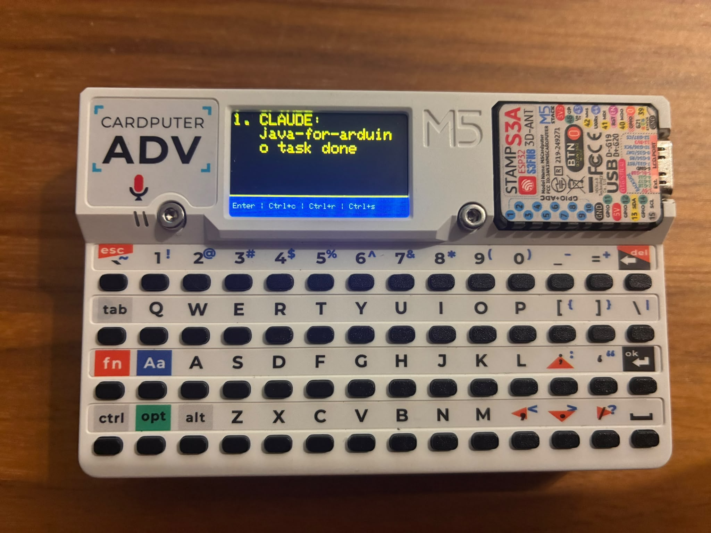
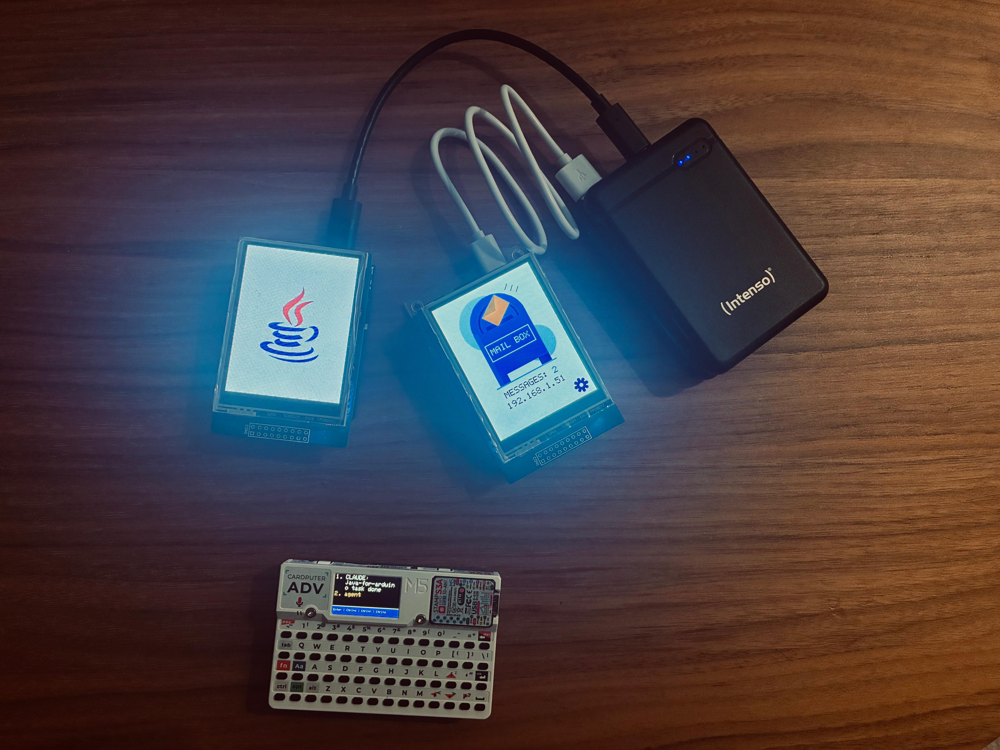
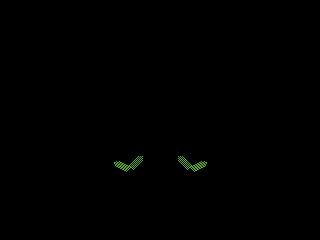
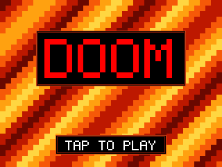
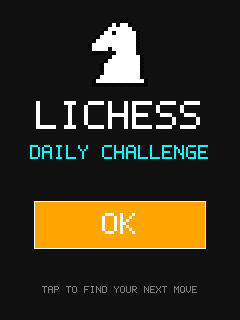

Showcase
Showcase programs are complete, working applications built with Juno. Each one runs on real hardware, uses several
parts of the API together, and is the best place to see how a larger program is organized. Their source is in
juno-examples.
Mailbox
Mailbox is a remote messaging system for Claude. Run Mailbox and define an API key to be shared with Claude and the M5Stack Cardputer. On the M5Stack Cardputer you can send messages to Mailbox, and Claude periodically reviews the mailbox to process them and notify the status.


| Field | Value |
|---|---|
| Sources | usecases/mailbox |
| Board supported | Arduino Q (server), M5Stack Cardputer (client) |
| Features used | HTTPS server, HTTPS client, self-signed certificates, Wi-Fi, SD card, API key header, TFT touch screen, Cardputer keyboard, MVC view router, JSON, serial output, clock, delays |
Gladiator
Gladiator is a game for the ELEGOO 2.8" TFT touch shield. Two gladiators fight in a Roman arena, each seen from its own board, while a third board keeps the arena. The solo mode runs a CPU-versus-CPU duel on a single board, with no network needed.

| Field | Value |
|---|---|
| Sources | games/gladiator |
| Board supported | Arduino Q |
| Features used | Wi-Fi, UDP, SD card, TFT touch screen, rotating 3D wireframe view, CPU opponent AI, lion, javelins, smoke, stamina, random numbers, clock |
Doom
DOOM runs in landscape on the ELEGOO 2.8" TFT touch shield, drawn as a wireframe with DOOM's own BSP
renderer. Pick HUMAN (touch to turn, walk and fire) or CPU (an autopilot), then the episode and skill. The game
reads your own DOOM1.WAD from the microSD card.

| Field | Value |
|---|---|
| Sources | games/doom |
| Board supported | Arduino Q |
| Features used | TFT touch screen, SD card with RandomAccessFile, MVC view router, BSP wireframe renderer, CPU autopilot, serial output, delays, clock |
Supabase
SupabaseGroveTemperatures
reads three Grove temperature sensors once a minute and inserts them as one row of a Supabase table through its
PostgREST API. It shows Wi-Fi, HTTPS requests with caller-owned buffers, and a timestamp taken once
from LocalDateTime.now() and then advanced by the board's clock, so the program makes no extra time requests.
A failing sensor is sent as null, so one broken sensor does not stop the other two from being published. The board is
a public client, so it uses a publishable key that is protected by Row Level Security. The
UNO R4 WiFi page describes the wiring.
| Field | Value |
|---|---|
| Sources | usecases/supabase |
| Board supported | UNO R4 WiFi, UNO Q |
| Features used | Wi-Fi, HTTPS, Grove sensors, Grove Base Shield, LocalDateTime, clock, TFT touch screen, MVC view router, serial output, delays |
Lichess
LichessDailyChallenges
is a chess tactics trainer for the UNO R4 WiFi and its TFT touch shield. The cover leads to a challenge menu built with
the MVC pattern. The daily puzzle and a fresh public puzzle are fetched from Lichess as a position and its
solution, and the player finds the moves on the touch board.
The program reads wifi.ssid and wifi.password from application.properties on the shield's microSD card. Its
buffers are allocated once at startup, so the frame loop allocates nothing.

| Field | Value |
|---|---|
| Sources | usecases/lichess |
| Board supported | UNO R4 WiFi |
| Features used | Wi-Fi, HTTPS, JSON, SD card, TFT touch screen, MVC view router, chess piece rendering, clock, serial output, delays |
Polyphonic RCX
ZeldaPolyphonicRcx
plays the opening of Ocarina of Time as three synchronized instruments, one on each of the LEGO RCX bricks' channels one,
two and three. The three bricks sound together, so the melody and its harmony come from different bricks.
The same program runs on an Arduino Nano ESP32 through the Nano Connector Carrier, in
ZeldaPolyphonicRcxNano.
Its infrared transmitter is on a Grove socket and its receiver on the Grove I2C socket. See the
LEGO page for the RCX link. This version adds a bass instrument on a fourth brick, channel 4.
| Field | Value |
|---|---|
| Sources | usecases/zeldapoliphonicrcx |
| Board supported | Arduino Nano ESP32 |
| Features used | Infrared link, RCX channels, multi-brick playback, RCX indicator lights, Grove infrared emitter and receiver, Nano Connector Carrier, serial output, delays |